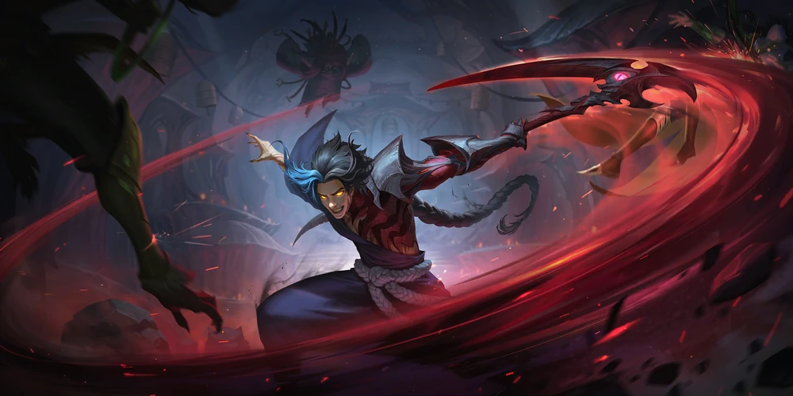

KaynKayn is a conflicted soul, torn between two powerful forms that define his existence. As a wielder of the Darkin blade, he struggles to control the power of Rhaast, the ancient and deadly Darkin that resides within his weapon. At the same time, Kayn strives to embrace his own strength and mastery, hoping to overcome Rhaast and become the true Shadow Assassin. When Kayn is consumed by Rhaast, he becomes a force of destruction, embodying the rage and violence of the Darkin. But in his Shadow Assassin form, he is faster, more agile, and deadly in combat, as he channels the power of shadows and becomes the ultimate assassin. |